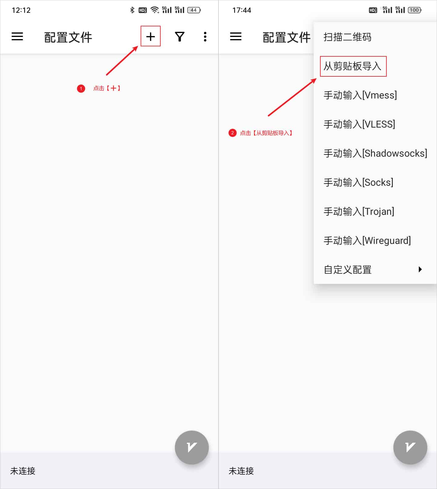
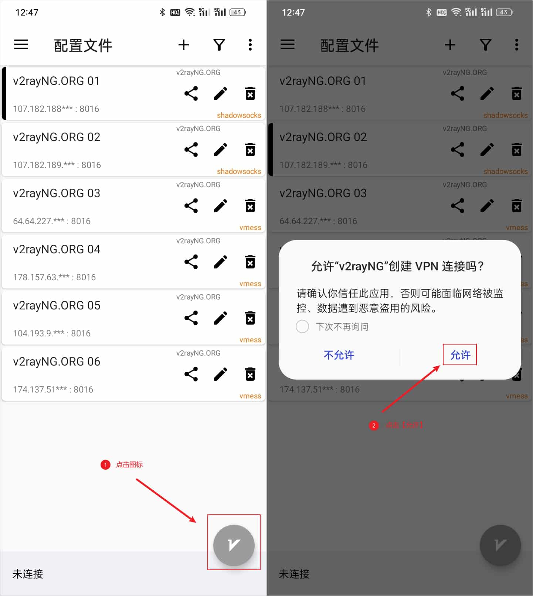

使用教程
安卓手机使用步骤
- 下载安装 —— 下载安装V2rayNG,老手机下载V2rayNG
- 复制节点 —— 大尺寸编辑区，输入即自动保存，右上角一键复制全部内容。
- 导入节点 —— 大尺寸编辑区，输入即自动保存，右上角一键复制全部内容。
- 测试节点 —— 大尺寸编辑区，输入即自动保存，右上角一键复制全部内容。
- 开启代理 —— 大尺寸编辑区，输入即自动保存，右上角一键复制全部内容。


苹果手机使用步骤
- 注册美区AppleID —— 美国地址生成器
打开 appleid.apple.com
点击 创建 Apple ID
填写：姓名、邮箱、密码、出生日期
国家/地区选择:United States(美国)
填写美国地址（示例格式）：
Street:123 Main St
City:Portland
State:OR(Oregon)
ZIP:97201
Phone:503-555-1234
输入国内手机号验证码
完成邮箱验证 → 注册完成
在 iPhone / iPad 的 App Store 登录完成激活
电脑使用步骤
- 下载安装V2rayN —— 右上角一键切换白天/黑夜主题，偏好自动记忆。
- 复制节点 —— 电脑、平板、手机竖屏横屏都能获得舒适体验。
- 导入节点 —— 菜单与主题逻辑集中维护，三个页面共享，改一处即全站生效。
- 开启代理 —— 无框架、无构建，仅一个 CSS 和一个 JS，打开即用。